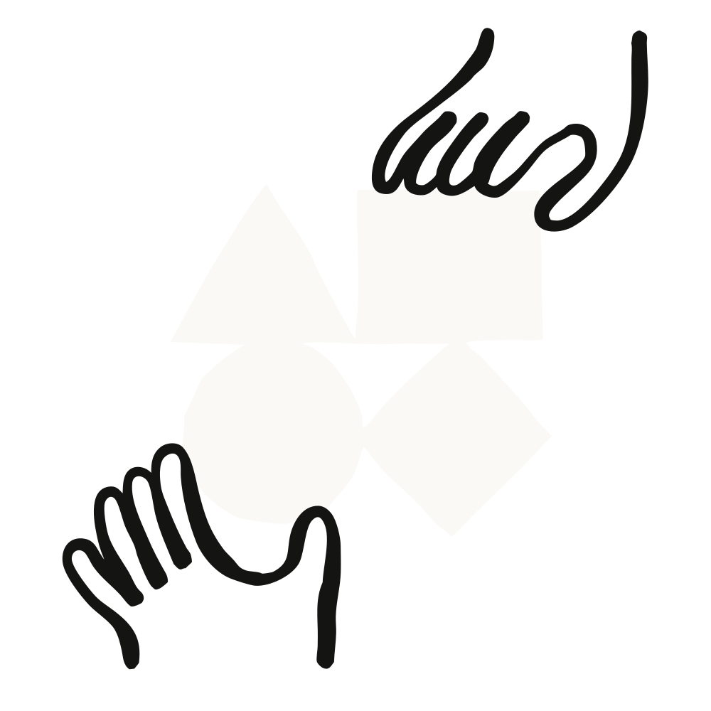
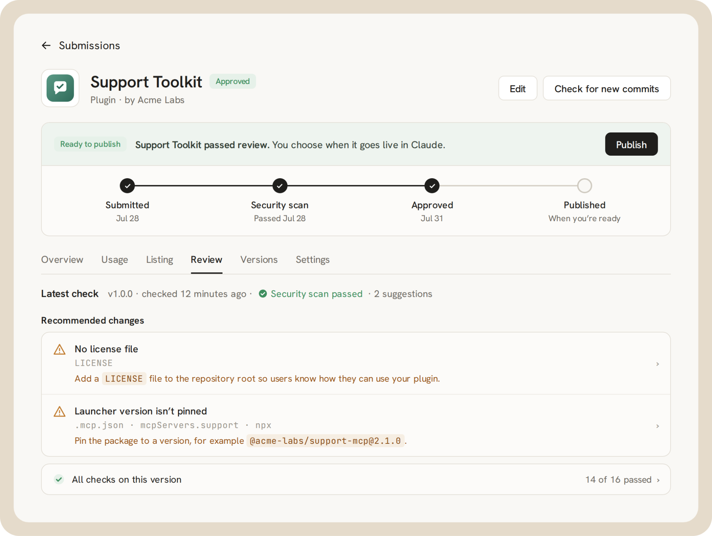
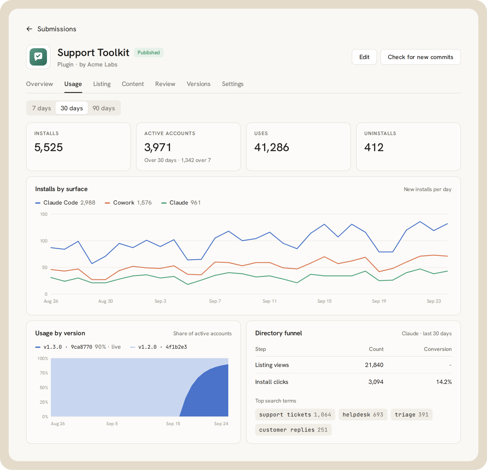

이제 새 개발자 포털을 통해 Claude 디렉터리에 플러그인을 제출하고, 검토 과정을 추적하고, 게시된 뒤에는 사용 분석까지 볼 수 있다.
매일 수백만 명이 Claude를 자신의 앱, 업무 도구, 데이터에 연결한다. 오늘 우리는 개발자가 그 사용자들에게 더 쉽게 다가갈 수 있도록 한다.
플러그인(plugin)은 MCP 커넥터(connector), 에이전트 스킬(Agent Skills), 또는 둘 모두를 하나로 묶은 패키지이며, Claude용 서드파티 확장을 만드는 주된 방법이다. 플러그인을 만들어 새 디렉터리 제출 포털로 제출하면, 승인된 뒤 Claude 디렉터리에 등록된다.
디렉터리 제출 포털은 유료 Claude 플랜을 사용하는 개발자에게 열려 있다. 플러그인을 제출해 Claude 디렉터리에 게시하는 방법은 두 가지다.
어느 경로를 택하든 포털이 제출부터 출시까지 안내한다. 할 수 있는 일은 다음과 같다.

플러그인이 게시되면 사용 분석에서 제품 표면(product surface)과 버전별 설치 수를 보여주므로, 사용자를 위해 어떤 수정과 기능을 우선할지 정할 수 있다. 발견(discovery) 측면에서는 목록이 얼마나 자주 조회되는지, 어떤 검색어가 사람들을 그 목록으로 이끄는지 볼 수 있어, 새로운 사용자에게 다가가도록 목록을 다듬을 수 있다.

Claude는 흔히 MCP 2.0이라 부르는 최신 MCP 사양을 지원하며, 여기에는 상태 비저장(stateless) 코어가 포함된다. 두 가지 MCP 확장(extension)으로 플러그인 사용 경험을 개선할 수 있다. 채팅 안에서 인터랙티브 UI를 제공하는 MCP Apps, 그리고 기업 사용자를 위한 무개입(zero-touch) OAuth를 제공하는 Enterprise Managed Auth다. 더 많은 MCP 기능과 확장에 대한 지원도 곧 추가된다.
플러그인은 서드파티 개발자가 Claude용 확장을 만드는 주된 방법이다. 앞으로 몇 주에 걸쳐 Claude와 Claude Code 전반에 하나의 통합된 발견 경험이 순차적으로 배포된다. 스킬과 MCP 커넥터는 여전히 기본 구성 요소(building block)로 남으며, Claude 디렉터리도 계속해서 이들을 목록에 올린다. 앞으로 개발자는 자신의 커넥터 목록을 플러그인으로 전환할 수 있게 된다. 이미 Claude 디렉터리에 스킬, 커넥터, 플러그인이 올라가 있다면 아무것도 바꿀 필요가 없다.
플러그인 제작을 시작하려면 플러그인 만드는 방법 문서를 읽고, 여기에서 플러그인을 제출하면 된다.